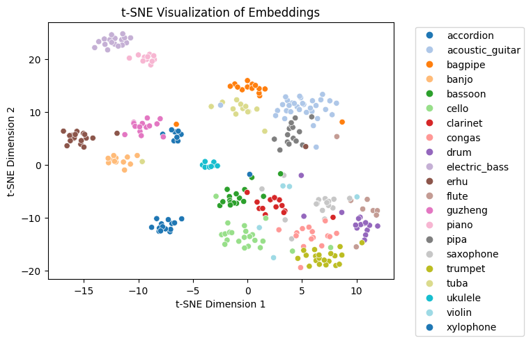

Results and Analysis
Using the dataset and the model specified in the methods, we
run a training loop for the contrastive learning for 40 epochs.
To visualize how successful the learned encodings are, we used scikit-learn to generate a tSNE plot with
perplexity 30. This procedure reduces the dimensionality of the embeddings to two dimensions while preserving
the relationship of the embeddings as closely as possible. This allows us to easily visualize how related
certain embeddings are
since embeddings that are closer together on the graph are more related.

The tSNE plot above for contrastive learning is of note because it shows some very obvious clusters of
instruments while others are rather scattered.
Ideally, we would want there to be a small, distinct cluster for each instrument. Some instruments like the
erhu and electric bass
generate these small clusters; however, instruments like the congas and ukeleles are scattered throughout
the graph, implying that the
model was unable to generate encodings for them that facilitate classification.
One reason as to why this may be the case is that certain instruments have more recognizable features that
are extracted from the video and audio encoder. For example, the erhu has a unique structure, allowing the
contrastive learning to take advantage
of it to generate an effective encoding. Therefore, from these encodings,
we would expect the classification model to perform better on certain instrument classes over others.
Let's see how the classification performs on the data.
As we can see from the graphs above, the model converges near 20 epochs and ends with a final classification
accuracy of around 80%.
However, to truly understand if the contrastive learning algorithm performs better, we need to compare it
with taking
the encoding
without the projection heads. This will tell us how well current encoders perform without contrastive
learning on augmentations.
Below, we have a table summarizing the results from contrastive loss vs. regular encodings on
combinations of training and validation types of
data (original, augmented, or both). The accuracies are the maximimum validation accuracy
achieved by the models during training over 20 epochs.
| Train/Validation |
Contrastive Encodings |
Regular Encodings |
| Augmented/Augmented |
84.47% |
76.70% |
| Unaugmented/Augmented |
81.23% |
76.70% |
| Both/Unaugmented |
93.85% |
92.56% |
From the data, we notice a few interesting results. Firstly, the max accuracies obtained by the encodings
generated by contrastive loss are higher than the encodings taken directly from ResNet-18 and OpenL3.
Specifically, there is a significant improvement in classification accuracy when validated with augmented
data but
trained with augmented or unaugmented data. This makes sense because the contrastive loss took into account
augmentations
on the input data, so it generated encodings that contained patterns found in the augmented data. Therefore,
when
training a simple linear layer on any data and validating with the augmented data, the model was able to
identify patterns easier in the encodings from contrastive loss
compared to regular encodings.
This aligns decently well with the tSNE plot for contrastive learning. If we take a look at which instrument
classes had the highest
accuracy of being measured for contrastive encoding and augmented training and validation, we noticed that the accordion,
bagpipe, drum, piano, and violin all had 100% accuracies in classification. This matches up nicely with small clusters for each
of those instruments present in the tSNE plot. However, the saxophone had 0% classification accuracy, which lines up with
the observed random scattering of saxophone points in the tSNE plot. Therefore, we can see that as expected, the instruments whose encodings
were clustered in the tSNE plot, have a high similarity, were able to be classified significantly more accurately compared to instruments
with no pattern, spread out throughout the tSNE plot. One reason for this high variance in instrument encoding is that the augmentations
created more significant variation for some instruments than others. We propose this hypothesis because the saxophone had a 80% classification accuracy
for the encodings produced without contrastive learning.
Something else worth noting is the last row of the table. There appears to be no significant difference when
trained with the full dataset
but validated with unaugmented data. This means that for unaugmented data, the original encoders already do
a good job in identifying features in the
audio-visual data. Therefore, performing contrastive learning isn't necessary here for testing on unaugmented data since the
representations
generated already suffice for classification.
A tSNE plot visualizing the relationship between the embeddings generated by contrastive learning.
The left graph is the loss of the classification model over 20 epochs and the right graph is the accuracy
of a validation dataset at each epoch. We use a 70-30 split for the training/validation data.

 Cross-modality contrastive learning has also been done, where Ma et al. propose an actively sampled
dictionary approach to a cross-modal, audio/visual extension of the traditional contrastive learning method
[2].
However, because Ma et al. focus on an actively sampled dictionary, they don't deal with data augmentation
in their paper.
This is what we plan to explore in ours - augmentations of audio and visual data and the effect they can
have on learning effective representations.
Cross-modality contrastive learning has also been done, where Ma et al. propose an actively sampled
dictionary approach to a cross-modal, audio/visual extension of the traditional contrastive learning method
[2].
However, because Ma et al. focus on an actively sampled dictionary, they don't deal with data augmentation
in their paper.
This is what we plan to explore in ours - augmentations of audio and visual data and the effect they can
have on learning effective representations.